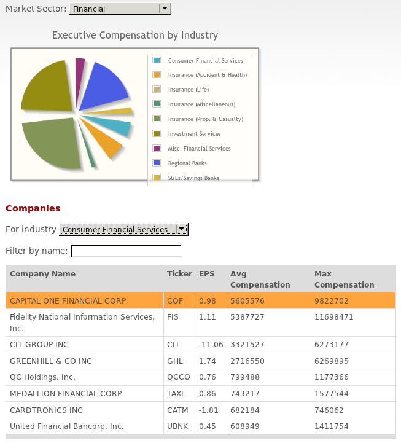
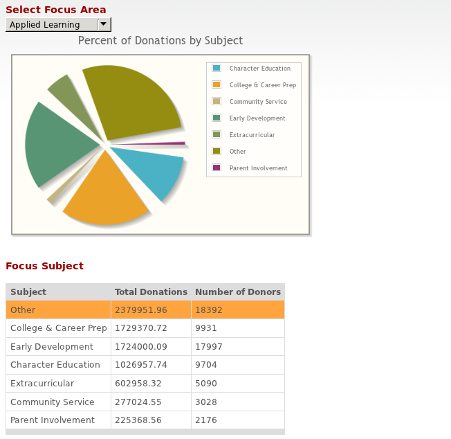
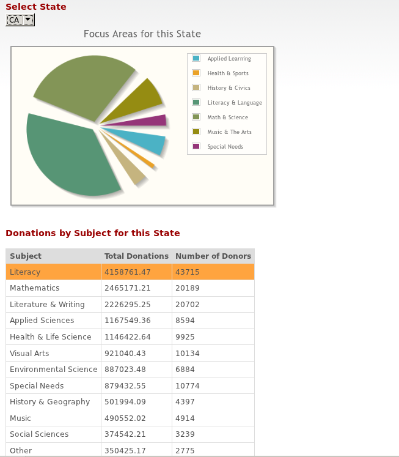
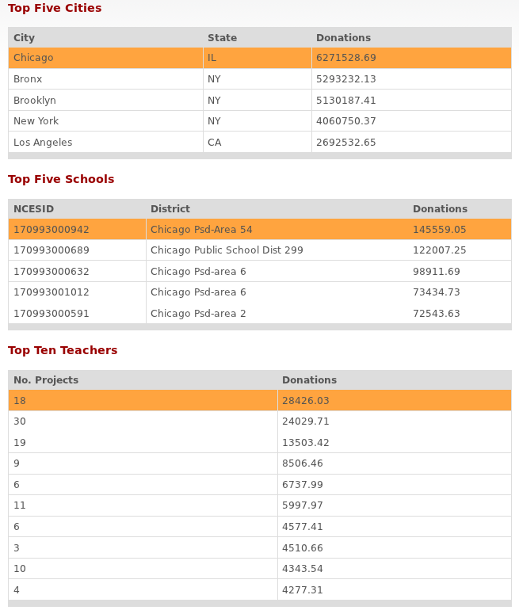
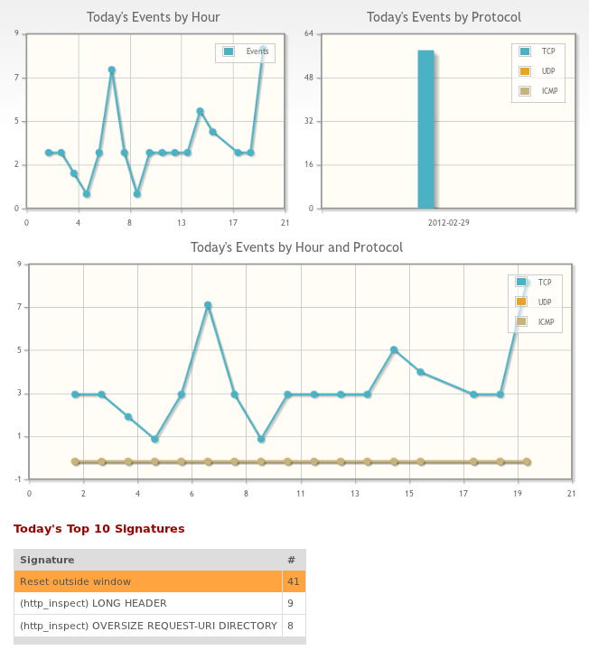
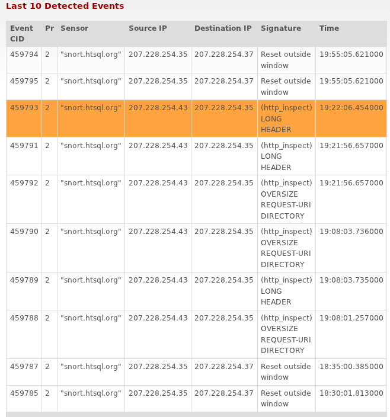
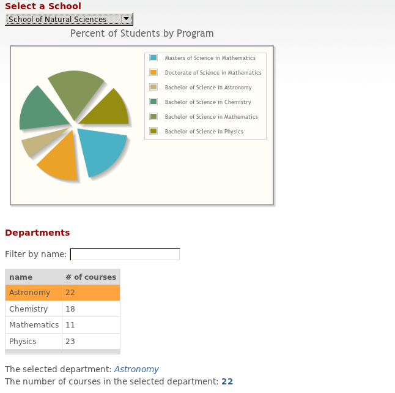

Table of Contents
HTSQL can be used in a many ways. This page demonstrates dashboards (using HTRAF Toolkit) and ad-hoc query examples. If you click on any of the screen shots below, it will take you to an interactive example with the complete source code below.
The EDGAR database contains detailed financial filings from U.S. public companies. The demo includes the most recent (2008) filing information from 1,000 public companies, including executive compensation data (courtesy of directEDGAR) and company facts and financials (from EDGAR Online). Perform your own financial analysis to see how executive salaries stack up against company performance.
The Executive Compensation dashboard shows the power of HTRAF to create an interactive application by combining HTSQL queries with HTRAF elements like selectors and text inputs. See how easy it is to find the top earners by industry, name and title.
Try these queries to see what compensation packages executives at 1000 U.S. companies enjoy.
| officer_id | cik | officer_name | officer_type | title |
|---|---|---|---|---|
| 10001 | 1750 | DAVID P. STORCH | Executive | CHAIRMAN OF THE BOARD AND CHIEF EXECUTIVE OFFICER |
| 10002 | 1750 | JAMES J. CLARK | Executive | GROUP VICE PRESIDENT AVIATION SUPPLY CHAIN |
| 10003 | 1750 | RICHARD J. POULTON | Executive | VICE PRESIDENT, CHIEF FINANCIAL OFFICER AND TREASURER |
| 10004 | 1750 | TERRY D. STINSON | Executive | GROUP VICE PRESIDENT STRUCTURES AND SYSTEMS |
| 10005 | 1750 | TIMOTHY J. ROMENESKO | Executive | PRESIDENT AND CHIEF OPERATING OFFICER |
Here’s the simplest possible HTSQL query — return all rows and columns from the officer table. As with all HTSQL queries, the URL is the query.
| officer_name | title |
|---|---|
| DAVID P. STORCH | CHAIRMAN OF THE BOARD AND CHIEF EXECUTIVE OFFICER |
| JAMES J. CLARK | GROUP VICE PRESIDENT AVIATION SUPPLY CHAIN |
| RICHARD J. POULTON | VICE PRESIDENT, CHIEF FINANCIAL OFFICER AND TREASURER |
| TERRY D. STINSON | GROUP VICE PRESIDENT STRUCTURES AND SYSTEMS |
| TIMOTHY J. ROMENESKO | PRESIDENT AND CHIEF OPERATING OFFICER |
Here’s another simple query that shows selection of two specific columns, officer_name and officer_title, from the officer table.
| officer_name | title |
|---|---|
| MARK R. PINTO | SENIOR VICE PRESIDENT, CHIEF TECHNOLOGY OFFICER AND GENERAL MANAGER ENERGY AND ENVIRONMENTAL SOLUTIONS |
| WIDGE, SUNIL Y. | SENIOR VICE PRESIDENT AND CHIEF TECHNOLOGY OFFICER |
| HOSSEIN M. MOGHADAM | SENIOR VICE PRESIDENT, CHIEF TECHNOLOGY OFFICER |
| LARRY A. SHOFF | EXEC. V.P. AND CHIEF TECHNOLOGY OFFICER |
| ROBERT C. DOBKIN | VICE PRESIDENT, ENGINEERING AND CHIEF TECHNOLOGY OFFICER |
Same selector as the previous query, but here we’ve added a filter. This filter finds rows in the officer table where the title contains chief technology officer.
| officer_name | amount |
|---|---|
| DAVID P. STORCH | 695657 |
| JAMES J. CLARK | 153786 |
| RICHARD J. POULTON | 25269 |
| TIMOTHY J. ROMENESKO | 162393 |
| DAN L. GUNTER | 41081 |
This illustrates a simple link. The base table is compensation. The first expression in the selector, officer.officer_name instructs HTSQL to return the officer_name column from the (related) officer table. Note that we don’t have to specify the join in any more detail because HTSQL already knows how the officer table is related to the compensation table.
| name | count(officer) | max(officer.sum(compensation.amount)) |
|---|---|---|
| WET SEAL INC | 11 | 2910449 |
| DANA HOLDING CORP | 10 | 8720591 |
| ITC Holdings Corp. | 10 | 7319156 |
| MOTOROLA INC | 9 | 17271677 |
| SPRINT NEXTEL CORP | 9 | 19201373 |
This example shows an expression that is straightforward and reasonably intuitive in HTSQL — for each company, we return the number of officers and maximum total compensation given to those officers. Interestingly, the SQL equivalent is neither intuitive nor simple (go ahead, try it.) This is not an accident. We’ve spent the last six years working to make sure that HTSQL syntax is intuitive enough for business analysts and power users to understand, yet powerful enough for developers to use.
Donors Choose is a great organization that matches donors with classrooms in need. They’re sponsoring the Hacking Education contest (through June 30, 2011) to encourage app developers to find helpful new ways to use their project database.
The Top Subjects dashboard provides a visualization of which subject areas received the most donation dollars. Even simple dashboards like this one provide a greater degree of insight into data than tabular data (let alone raw data output). Using HTSQL and HTRAF, anyone familiar with the data (and who has basic HTML skills) can create data visualizations.
The Subject by State dashboard shows what subject areas and donations are popular for a given state.
The Top Ten Teachers dashboard provides a data driven page that allows a user to select a city and a school, and then displays the top ten teachers for that school and all of their related projects.
The demonstration HTSQL server on top of the Donors Choose data set is at http://donorschoose.htsql.org – it is configured to return no more than 1000 rows per request.
Try these queries to get a flavor for what’s in the database:
| _projectid | primary_focus_subject | primary_focus_area |
|---|---|---|
| 0000023f507999464aa2b78875b7e5d6 | Health & Life Science | Math & Science |
| 0000702ee4cefdb1e7f89084e50d3c85 | Mathematics | Math & Science |
| 00008c61582d7b4d3a2d89ad88f9eedf | Literature & Writing | Literacy & Language |
| 000096b54de3b748fce836454030c8d5 | Early Development | Applied Learning |
| 0000ab9b97284791e1c6759b9046db9e | Literacy | Literacy & Language |
This query returns the first 10 rows from the project table — if you omit the limit(10) our demo server silently truncates the results to 1000 rows.
| title | count(donation) |
|---|---|
| GOAL: Ordinary Students –> SUCCESSFUL SCIENTISTS | 11 |
| Projection to Capture Attention | 6 |
| Special Education Students Need Literary Resources! | 3 |
| We Need Puzzles And Manipulatives! | 4 |
| Come Play with Me! | 0 |
This query returns only the title and the number of donations per project.
title
GOAL: Ordinary Students --> SUCCESSFUL SCIENTISTS
Rockin' 5th Grade
Art Library
Let's Learn History While Reading!
…
This query will return projects where the school’s state is LA (also truncated at 1000 rows). The output format is CSV, replace /:csv with /:json to create your mashups.
| count(teacher) | count(project) | count(donation) |
|---|---|---|
| 117751 | 295287 | 1118828 |
This query returns the number of teachers, cities, and projects that are in the dataset.
This query returns the number of teachers sponsoring projects in more than one school.
| primary_focus_subject | sum(^.total_donations)/sum(^.num_donors) |
|---|---|
| College & Career Prep | 174.138628537 |
| Economics | 160.810041265 |
| Other | 129.401476729 |
| Civics & Government | 119.893683751 |
| Sports | 119.730495993 |
This query returns primary focus subjects in descending order by the average donation amount. Unsurprisingly, College & Career Prep takes the cake with $174 per donor.
| city | state | sum(school.project.total_donations)/count(school) |
|---|---|---|
| La Mesa | CA | 39959.4657143 |
| E Palo Alto | CA | 22405.5214286 |
| Georgetown | SC | 17619.7433333 |
| Corona | NY | 16641.9222222 |
| Porter | TX | 16480.7683333 |
This query produce cities with more than 5 schools ordered by the number of donations per school.
La Mesa, CA has by far the highest number of donations per school — $39k. The next closest is E. Palo Alto with $22k.
| city | count(donation?dollar_amount=‘100_and_up’) | |
|---|---|---|
| city | state | |
| Seattle | WA | 10298 |
| New York | NJ | 3127 |
| Oklahoma City | OK | 3012 |
| Chicago | IL | 2023 |
| San Francisco | CA | 1849 |
This query produce city and state of each donor ordered by the number of donations of 100 dollars and up.
The Gates Foundation seems to be the single largest donor with 10,298 donations of $100 and up.
Snort is a free, lightweight intrusion detection system developed by Sourcefire. This demo shows how easy it is to read and visualize network logs stored in the Snort database.
The Daily Overview dashboard provides a graphical and tabular summary of today’s activity.
The Event Detail dashboard lists the last 10 events, where clicking an event shows detail such as protocol header information and data payload.
The HTSQL interface for snort data source is at http://snort.htsql.org/.
This query displays source IP addresses from the last 10 events.
| inet(ip_src) |
|---|
| 199.231.208.98 |
| 205.251.242.165 |
| 69.56.174.114 |
| 96.126.116.126 |
| 96.126.116.126 |
| 78.110.52.64 |
| 192.168.100.3 |
| 192.168.100.3 |
| 192.168.100.3 |
| 78.110.52.64 |
This query displays all distinct destinations IP addresses and TCP ports from source IP 216.243.150.122.
| inet(iphdr.ip_src) | inet(iphdr.ip_dst) | tcp_dport |
|---|---|---|
| 216.243.150.122 | 192.168.0.117 | 21 |
| 216.243.150.122 | 192.168.0.117 | 22 |
| 216.243.150.122 | 192.168.0.117 | 23 |
| 216.243.150.122 | 192.168.0.117 | 25 |
| 216.243.150.122 | 192.168.0.117 | 80 |
This example shows all pairs of source and destination IPs where the source IP belongs to the block 10.90.90.0/24.
| inet(ip_src) | inet(ip_dst) |
|---|---|
| 10.90.90.75 | 192.168.0.117 |
| 10.90.90.91 | 192.168.0.117 |
This query shows the most recent 500 events for host 216.243.150.122. The output is in CSV format and contains the timestamp, destination IP address, TCP destination port, UDP destination port, ICMP type, signature name and signature class name.
timestamp,inet(iphdr.ip_dst),tcp_dport,udp_dport,icmp_type,sig_name,sig_class_name
2011-05-13 18:15:34.183000+00:00,192.168.0.117,80,,,(http_inspect) OVERSIZE REQUEST-URI DIRECTORY,bad-unknown
2011-05-13 18:15:33.143000+00:00,192.168.0.117,80,,,(http_inspect) OVERSIZE REQUEST-URI DIRECTORY,bad-unknown
2011-05-13 18:15:16.836000+00:00,192.168.0.117,21,,,(ftp_telnet) Invalid FTP Command,bad-unknown
2011-05-13 18:15:16.835000+00:00,192.168.0.117,21,,,(ftp_telnet) Invalid FTP Command,bad-unknown
2011-05-13 18:15:16.834000+00:00,192.168.0.117,21,,,FTP USER overflow attempt,attempted-admin
2011-05-13 18:15:16.834000+00:00,192.168.0.117,21,,,(ftp_telnet) FTP command parameters were too long,attempted-admin
2011-05-13 18:15:16.774000+00:00,192.168.0.117,21,,,POLICY FTP anonymous login attempt,misc-activity
2011-05-13 18:15:16.715000+00:00,192.168.0.117,21,,,POLICY FTP anonymous login attempt,misc-activity
2011-05-13 18:15:15.659000+00:00,192.168.0.117,25,,,SMTP HELO overflow attempt,attempted-admin
…
This query displays the number of unique IP addresses for each detected signature.
| sig_sid | sig_name | count(distinct(event{iphdr.ip_src})) |
|---|---|---|
| 4 | TCP Timestamp is outside of PAWS window | 14 |
| 2 | Data on SYN packet | 1 |
| 4 | (spp_ssh) Protocol mismatch | 129 |
| 15 | Reset outside window | 321 |
| 3 | (ftp_telnet) Telnet Subnegotiation Begin Command without Subnegotiation End | 1 |
| 2 | (ftp_telnet) Invalid FTP Command | 1 |
| 4 | (smtp) Attempted specific command buffer overflow: HELO, 1460 chars | 1 |
| 1 | (ftp_telnet) Consecutive Telnet AYT commands beyond threshold | 1 |
| 4 | (smtp) Attempted specific command buffer overflow: VRFY, 1460 chars | 1 |
| 1 | (smtp) Attempted command buffer overflow: more than 512 chars | 1 |
This query displays all unique IP addresses and detected signature names with the number of times the IP has been detected with the signature.
| inet(iphdr.ip_src) | sig_name | count(^) |
|---|---|---|
| 119.188.7.192 | (spp_ssh) Protocol mismatch | 52730 |
| 96.31.99.167 | (spp_ssh) Protocol mismatch | 46674 |
| 204.228.226.17 | (spp_ssh) Protocol mismatch | 41536 |
| 204.228.226.16 | (spp_ssh) Protocol mismatch | 29226 |
| 58.64.167.156 | (spp_ssh) Protocol mismatch | 26314 |
| 207.228.254.35 | Reset outside window | 20882 |
| 207.249.136.19 | (spp_ssh) Protocol mismatch | 19548 |
| 218.15.221.84 | (spp_ssh) Protocol mismatch | 17676 |
| 207.248.63.162 | (spp_ssh) Protocol mismatch | 17060 |
| 46.17.0.124 | (spp_ssh) Protocol mismatch | 13692 |
This query displays all source and destination IPs that caused high severity events today along with signature name and timestamp.
| inet(iphdr.ip_src) | inet(iphdr.ip_dst) | sig_name | time(timestamp) |
|---|
This gallery is for examples and dashboards based on our sample database which is a dummy university course catalog & enrollment system.
The Course Catalog dashboard lets you drill down to individual courses by first selecting the school, then clicking on the department name. The dashboard updates in real time and always features the most current data because HTSQL pulls it directly from the database.
Welcome to HTSQL’s test database, where we put HTSQL through its paces with a complex database structure. The courses are fake, but the problems solved are real, as these queries show how easy it is to aggregate and analyze course data from multiple tables. For a complete tour of this database and HTSQL, visit the HTSQL Tutorial.
| name | avg(department.count(course)) |
|---|---|
| School of Art & Design | 19.0 |
| School of Business | 14.6666666667 |
| College of Education | 17.5 |
| School of Engineering | 17.75 |
no,credits,title
100,2,Practical Bookkeeping
200,3,Introduction to Accounting
234,3,Accounting Information Systems
315,5,Financial Accounting
322,3,Managerial Accounting
420,3,Individual Taxation
426,3,Corporate Taxation
431,3,Nonprofit Organization Accounting
506,3,Corporate Financial Law
511,5,Audit
527,3,Advanced Accounting
620,6,Accounting Internship
101,6,Introduction to Microeconomics
102,6,Introduction to Macroeconomics
112,3,Quantitative Method in Microeconomics
205,3,Introduction to Global Economy
213,3,American Economic History
246,3,Microeconomic Theory
278,4,Statistics in Economics
321,3,Banking System
339,3,Labor Economics
352,3,History of Economic Thought
370,3,Game Theory
412,3,International Financial Markets
430,4,Econometrics
452,3,Government Finance
489,3,Special Topics in Economics
256,3,Principles of Marketing
304,3,Managerial Economics I
305,3,Managerial Economics II
318,3,Marketing Research
331,4,Marketing Planning
355,5,Human Resource Management
401,3,Competitive Strategy
404,3,Corporate Financial Management
430,5,Promotion
434,3,Advertising
520,4,Project Management
531,3,International Business
601,3,Case Studies in Corporate Finance
650,3,International Marketing
756,3,Capital Risk Management
808,3,Principles of Portfolio Management
818,3,Financial Statement Analysis